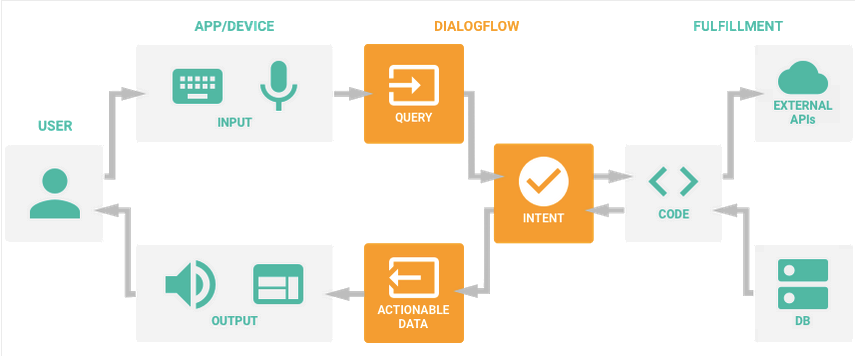

It takes a community to heal together.

Frontline is a Natural Language Processing interactive chatbot which provides personalized and localized support for friends and family of veterans and those suffering from PTSD. The project was created during September 15-16, 2018 for Lumohacks, a health-focused hackathon.
 Award: Top 15 Overall Teams - Wolfram Alpha
Award: Top 15 Overall Teams - Wolfram Alpha
 Award: Best Domain Registered with Domain.com
Award: Best Domain Registered with Domain.com
The Problem
By nature of their occupation, first responders and veterans are more vulnerable to mental illnesses such as PTSD. One in three veterans are diagnosed with PTSD, and the research and knowledge we have about treating PTSD for first responders is still severely lacking.
Our question is - How do we reach out to support them and be there for them, especially when they cannot reach out themselves? How can we, as a society, make a difference for these vulnerable groups?
Target Market
We start with the people you care about - friends, family, acquaintances. These people are one degree from those who are vulnerable or suffering, and are best positioned to be an emotional support. They are familiar with technology but are not necessarily experts. Above all, they are empathetic in wanting to help someone they know who is in need.
Personas
The following 3 personas are examples of expected users for this project - a veteran who re-experiences traumatic times during service, and two people who notice the changed behaviour of a veteran they are close with but do not know how to reach out appropriately.
Most importantly, these people need the appropriate professional guidance and support in order to reach out and provide relevant care.
To summarize, we believe that the friends and family of those vulnerable to PTSD should be able to have the support and resources they need to reach out to the people close to them in need of help.
Solution
Our solution is a Natural Language Processing (NLP) chatbot which provides personalized and localized support for those who are one-degree from veterans and those vulnerable to PTSD.

Users interact and converse with Frontline which is trained to understand emotions and symptoms relevant to someone suffering from PTSD. In the case that a user displays signs of imminent risk or danger, such as suicidal intentions, Frontline has been trained to immediately provide hotlines to contact.
The user may interact with Frontline on the website or on Facebook. When on Facebook, Frontline has the additional feature of being able to give control of the chat to a real person (an administrator of the Facebook page).
Technology Stack
Dialogflow
Dialogflow is the Natural Language Processing framework we used to build the Frontline chatbot.
Dialogflow analyzes a conversational response and determines its intent, which is a specific path of conversation around which the bot can create a response. Understanding of a concept is created by designing entities which store related concepts and terminology, and can be integrated into a message to respond dynamically. It is hosted on Google Cloud Platform.

The strongest feature of Frontline is not only how we have trained the chatbot but also how we can continue to train it. The potential of this AI bot is limited only by the effort and time of the developers. One of the future training aspects that we hope to improve upon is Knowledge Training. This feature, as part of Google Dialogflow, allows a user to train the AI not just on intent and response queries but by FAQs and knowledge based articles.
The mental health community has so many great resources available and instead of re-inventing the wheel, we are learning from it. With Dialogflow the console allows the input of CSV or HTML files containing knowledge based articles. The tool is able to parse this data and create separate intents that do not need to be pre-defined, so a user is not limited solely to questions they would ask. By training the AI on this material, it can better help identify an issue and direct a user to the help that they need. It is up to everyone to help the mental health community, not just a single individual, but pooling the combined resources of the pre-existing scientific base we can begin to create a solution that will truly make a difference.
Facebook
Facebook is our natural integration and interaction platform.
Users can talk with the bot over social media through a chat with this Facebook page which is connected directly with the Google Dialogflow bot. Keep in mind that any dialogue exchanged through the Facebook bot can be read by the administrators of the project.
To restart the conversation, delete the conversation and send a new message to the page.
Domain.com
Domain.com was the DNS management host used for the chatbot website.
The domain was chosen to reflect the project, and was set with the A Record pointing to the IP address of the Google Cloud Platform host. The domain http://frontline-help.com/ was temporarily set up for the hackathon and is no longer active.
Google Cloud Platform
Google Cloud Platform was the host for the website and for Google Dialogflow.
A Google Compute Engine Virtual Machine instance was set up to host the website temporarily for the hackathon but is no longer active. The website is now hosted on GitHub at https://github.com/lumohacks2018/.
Positioning
In relation to current counselling and chat services (e.g. My SSP), this augments their effectiveness by directing users to resources which are appropriate and relevant to their situation. Frontline aids in content discovery as users will often learn about resources they were not previously aware of.
Frontline would augment peer support to be stronger and more educated by providing directly pertinent information.
Objectives
The strategic objectives of this project were to educate and empower the community to be able to help others and to create a localized social impact.
They say “It takes a village to raise a child.”
It also takes a community to heal - together.
About
The creators of this project are Jeffrey Leung, Kieran McCormick, Bradley Dalrymple, and Carlson Chan.
In Lumohacks 2016, we created an automated pill dispenser. Learn more about the project here.
Disclaimer: This page was created after the hackathon's completion.